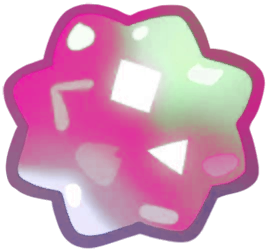

Cancer

Months of the year: Jun and Jul
————⋆✦⋆————
You have found an Cancer star fragment! It's so soft and cute! When the Sun is in Cancer, it does so on the summer solstice, around June 21. This is the longest day of the year in the Northern Hemisphere and marks the beginning of summer. For those born under this sign, it is a period associated with home and family. By the way! Cancer is located near the celestial equator, making it visible in both the Northern and Southern Hemispheres. If you are in the Northern Hemisphere, you will be able to see Cancer in the night sky during the winter months, right near the constellations of Gemini and Leo.
Cancer is most visible in the winter months, especially between January and March. However, because its stars are not particularly bright, it is harder to see with the naked eye. The Manger Cluster, however, is one of the most notable objects in the constellation and can be observed even without a telescope in a clear sky.
This lost star fragment makes beautiful sounds, like a sweet lullaby...
————⋆✦⋆————
The girl of the ocean
High in the sky there was a beautiful ocean that no one could see from Earth. It was not like ordinary oceans, because its waves were bright silver and stars swam in it like little luminous fish. In this ocean lived a very special little girl. She had long, shiny hair like moonbeams, and she always went barefoot because she loved to feel the soft silver waves between her little fingers. She had a little bucket made of space shells that glowed in the dark.
Her most important job was to take care of the stars that swam in her ocean. When a little star got tired of swimming, she would scoop it up with her little bucket and help it float again. She would feed it moon dust and make necklaces for it from the pearls that fell when it rained in the sky blue ocean. The little girl never felt alone in her ocean. The stars were her friends, and together they played at making bright whirlpools and castles of glittering clouds. Every night, when the stars went to sleep, she covered them with blankets made of moonlight.